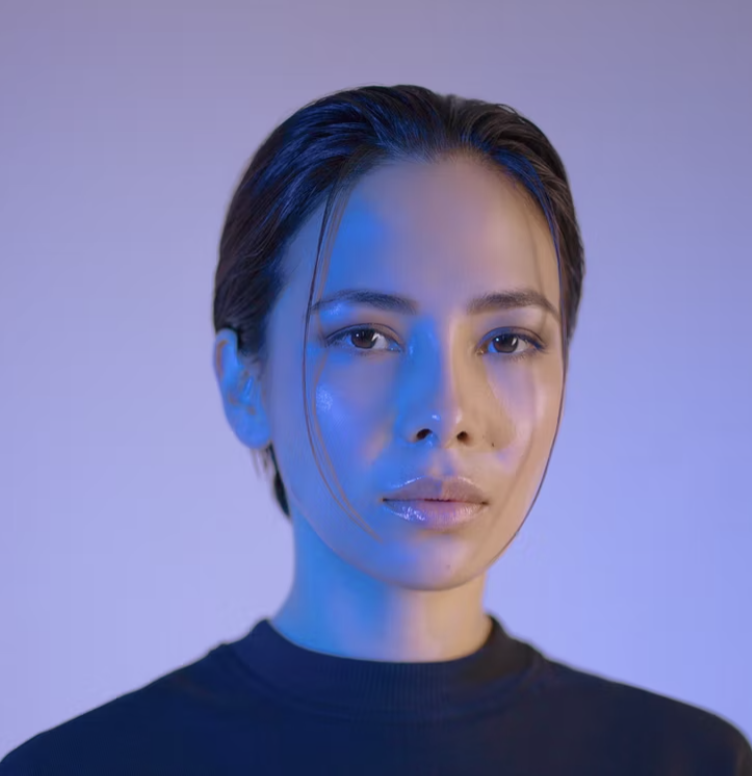

Jonkiky (yizhen) Chen
Software Engineer
Add Me To Your Contact
- A Coder. I do desgin, analyze, build and modify software to boost customer success.
- We recently established a platform to help clinician to identification and prioritization of molecular targets expressed in childhood cancers. Part of efforts to help NCI’s Childhood Cancer Data Initiative (CCDI) to build a community centered around childhood cancer care and research data.
- We are working on open source project for professional schedule tool, which helps to avoid back and forth to communicate in a group to find the best time to fit in everyone's schedule.
- Digital Business Card design